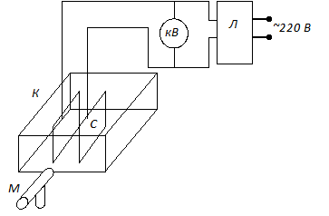

В стеклянную кювету К, заполненную жидким диэлектриком, опущены две параллельные пластины, к которым подводится напряжение от повышающего трансформатора.

Рис. 1
Изменяют напряжение с помощью ЛАТРа (Л) (автотрансформатора), который вместе с трансформатором (Тр) находится внутри кожуха установки. Регулировку напряжения производят поворотом ручки, выведенной на переднюю панель корпуса. Измеряют напряжение на пластинах С киловольтметром (кВ). Изменение уровня жидкости и расстояние между пластинами определяются измерительным микроскопом М. В поле зрения измерительного микроскопа помещена шкала, ориентацию которой можно изменять. Для определения расстояния между пластинами шкалу располагают горизонтально; для определения изменения уровня жидкости при включении напряжения шкалу располагают вертикально. При измерениях следует иметь в виду, что изображение, даваемое окуляром, перевернутое.